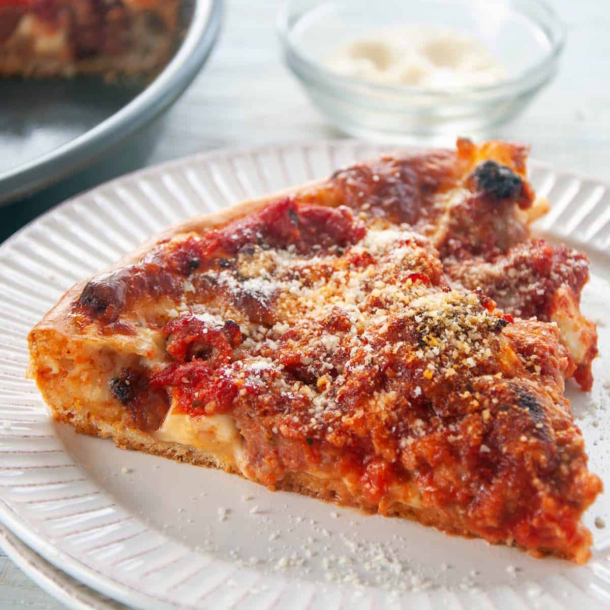

Pizza

Description
Below is the pizza recipe I used to make when I was a kid. I was inspired by the way Chicago pizzas were "upside-down," with the toppings on the bottom, cheese in the middle, and sauce on the top. I found this worked quite well with non-deep-dish pizzas (though you will have to eat it with a fork). I give the the toppings I used to use, in some combination, when I was making this pizza, but you are free to use whatever toppings you like.
Ingredients
- Dough
- 1 small can of crushed tomatoes
- 1 tbsp Italian seasoning
- 1 tbsp minced garlic
- 1 cup shredded mozeralla cheese
- 1 cup shredded provelone cheese
- 6 oz. ground Italian sausage
- Chopped green bell peppers to taste
- Bacon to taste
- Black olives to taste
- Other toppings as desired
- Cornmeal
- Olive oil
Directions
- Preheat oven to 350 degrees
- To make the sauce, in a small bowl mix the crushed tomatoes with the Italian seasoning and the minced garlic. Set aside.
- Cook Italian sausage in medium skillet over medium heat, using spatula to chop into smaller pieces as it cooks.
- Cook bacon. Chewier is better, as it will cook more in the oven.
- Season pizza stone by spreading olive oil over it and sprinkling with cornmeal. If you do not have a pizza stone, a large (14") Dutch oven or cast iron skillet will work as well
- Use a rolling pin to stretch out pizza dough into a circle, about 12" in diameter.
- Generously coat the dough in olive oil, and place on the pizza stone or cast iron
- Place the toppings (sausage, green bell peppers, bacon, and olives) directly on the crust. Leave about half an inch of space around the edges. You can also push the edges up slightly.
- Mix mozerella and provelone together. Sprinkle on top of the toppings.
- Add sauce on the very top, making sure to evenly distribute it
- Bake pizza until the crust has turned golden brown and the cheese has melted.
- Remove from oven and enjoy.